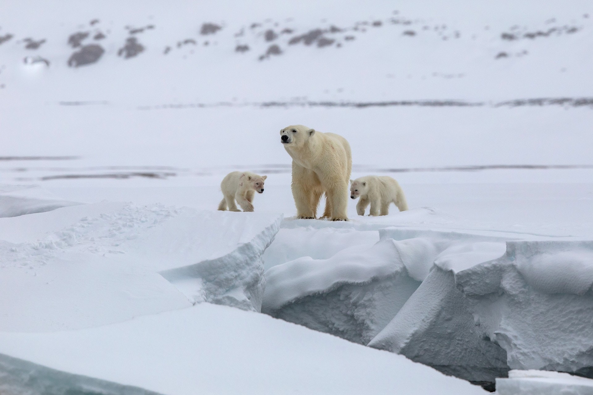
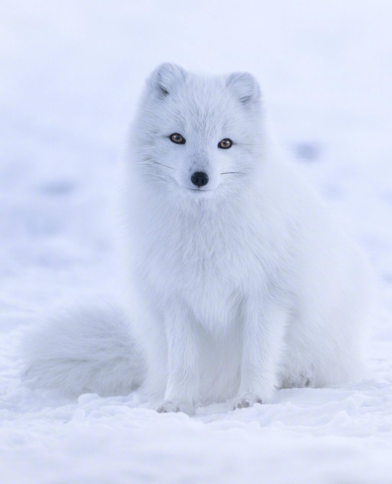
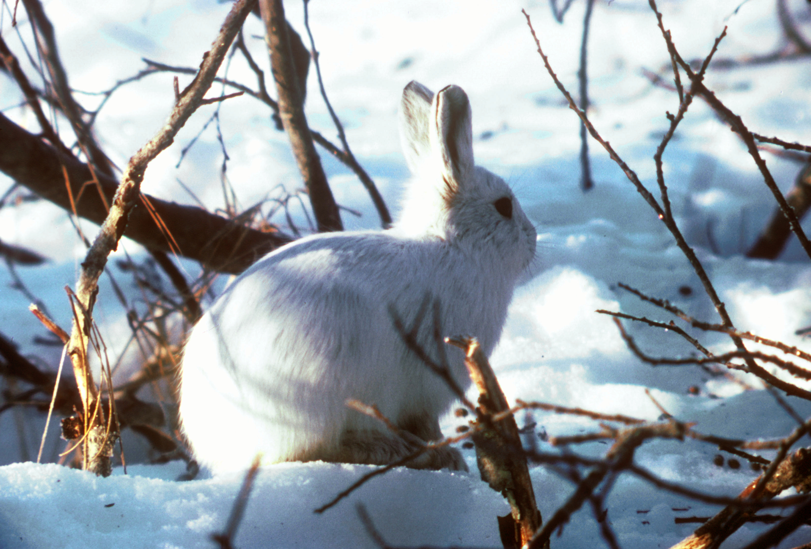
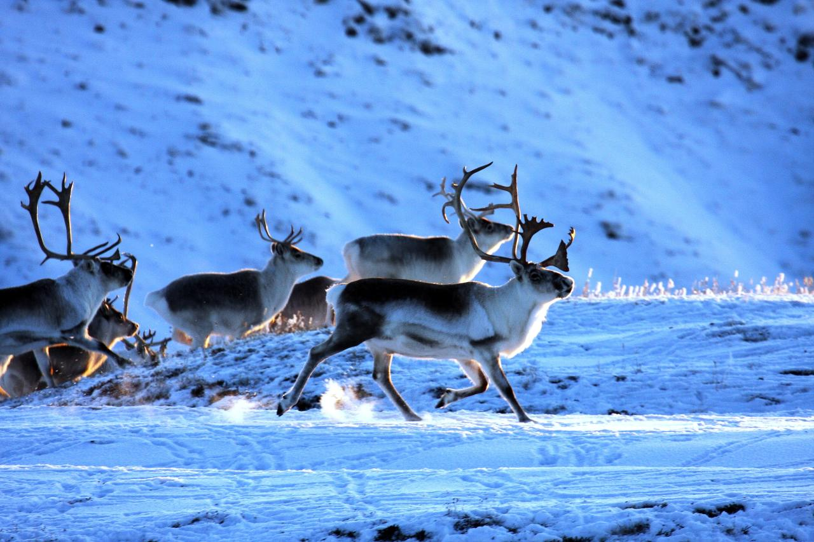
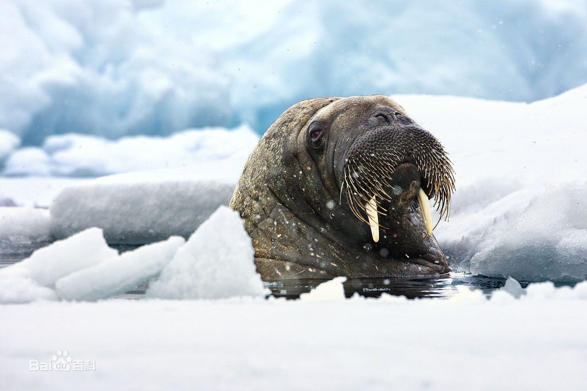
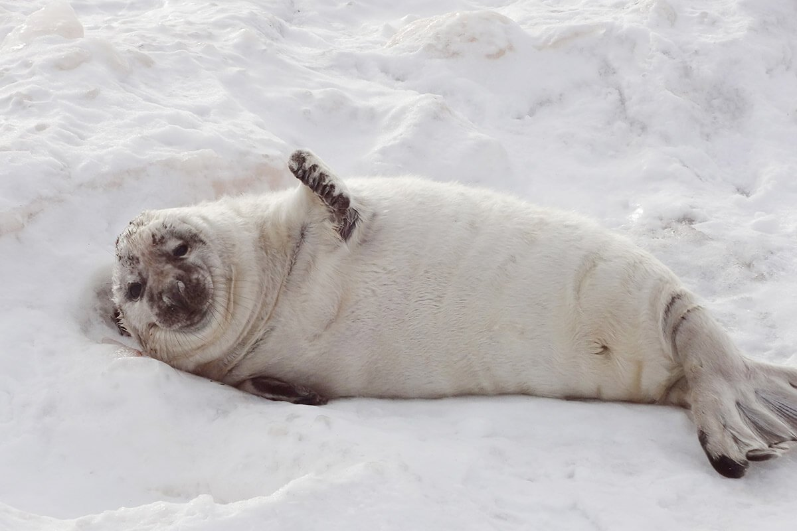

The Ecology of the Arctic
-
Ursus maritimus
The polar bear (Ursus maritimus) is a hypercarnivorous bear whose native range lies largely within the Arctic Circle, encompassing the Arctic Ocean, its surrounding seas and surrounding land masses. It is a large bear, approximately the same size as the omnivorous Kodiak bear (Ursus arctos middendorffi). A boar (adult male) weighs around 350–700 kg (772–1,543 lb), while a sow (adult female) is about half that size. Although it is the sister species of the brown bear, it has evolved to occupy a narrower ecological niche, with many body characteristics adapted for cold temperatures, for moving across snow, ice and open water, and for hunting seals, which make up most of its diet. Although most polar bears are born on land, they spend most of their time on the sea ice. Their scientific name means "maritime bear" and derives from this fact. Polar bears hunt their preferred food of seals from the edge of sea ice, often living off fat reserves when no sea ice is present. Because of their dependence on the sea ice, polar bears are classified as marine mammals.
 -
Alopex lagopus
The Arctic fox (Vulpes lagopus), also known as the white fox, polar fox, or snow fox, is a small fox native to the Arctic regions of the Northern Hemisphere and common throughout the Arctic tundra biome. It is well adapted to living in cold environments, and is best known for its thick, warm fur that is also used as camouflage. On average, Arctic foxes only live 3–4 years in the wild. Its body length ranges from 46 to 68 cm (18 to 27 in), with a generally rounded body shape to minimize the escape of body heat.
 -
Lepus arcticus
The Arctic hare (Lepus arcticus) is a species of hare which is highly adapted to living in the Arctic tundra, and other icy biomes. The Arctic hare survives with shortened ears and limbs, a small nose, fat that makes up 20% of its body, and a thick coat of fur. It usually digs holes in the ground or under snow to keep warm and sleep. Arctic hares look like rabbits but have shorter ears, are taller when standing, and, unlike rabbits, can thrive in extreme cold. They can travel together with many other hares, sometimes huddling with dozens or more, but are usually found alone, sometimes taking more than one partner. The Arctic hare can run up to 60 kilometres per hour (40 mph).
 -
Rangifer tarandus
The reindeer (Rangifer tarandus), also known as the caribou in North America, is a species of deer with circumpolar distribution, native to Arctic, sub-Arctic, tundra, boreal, and mountainous regions of northern Europe, Siberia, and North America. This includes both sedentary and migratory populations. Rangifer herd size varies greatly in different geographic regions. The Taimyr herd of migrating Siberian tundra reindeer (R. t. sibiricus) in Russia is the largest wild reindeer herd in the world, varying between 400,000 and 1,000,000. What was once the second largest herd is the migratory boreal woodland caribou (R. t. caribou) George River herd in Canada, with former variations between 28,000 and 385,000. As of January 2018, there are fewer than 9,000 animals estimated to be left in the George River herd, as reported by the Canadian Broadcasting Corporation. The New York Times reported in April 2018 of the disappearance of the only herd of southern mountain caribou in the lower 48 states, with an expert calling it "functionally extinct" after the herd's size dwindled to a mere three animals.
 -
Delphinapterus leucas
The beluga whale(Delphinapterus leucas) is an Arctic and sub-Arctic cetacean. It is one of two members of the family Monodontidae, along with the narwhal, and the only member of the genus Delphinapterus. It is also known as the white whale, as it is the only marine mammal of this colour; the sea canary, due to its high-pitched calls; and the melonhead, though that more commonly refers to the melon-headed whale, which is an oceanic dolphin. The beluga shares a name with a fish famous for its caviar.

-
Odobenus rosmarus
The walrus (Odobenus rosmarus) is a large flippered marine mammal with a discontinuous distribution about the North Pole in the Arctic Ocean and subarctic seas of the Northern Hemisphere. The walrus is the only living species in the family Odobenidae and genus Odobenus. This species is subdivided into three subspecies: the Atlantic walrus (O. r. rosmarus) which lives in the Atlantic Ocean, the Pacific walrus (O. r. divergens) which lives in the Pacific Ocean, and O. r. laptevi, which lives in the Laptev Sea of the Arctic Ocean.
 -
Phocidae
The earless seals, phocids or true seals are one of the three main groups of mammals within the seal lineage, Pinnipedia. All true seals are members of the family Phocidae. They are sometimes called crawling seals to distinguish them from the fur seals and sea lions of the family Otariidae. Seals live in the oceans of both hemispheres and, with the exception of the more tropical monk seals, are mostly confined to polar, subpolar, and temperate climates. The Baikal seal is the only species of exclusively freshwater seal.
